第5章
焦点未知时怎样求轨道
引理17
如果由已知圆锥曲线上任一点P向其任意内接四边形ABDC的四个边AB，CD，AC，DB以已知夹角作同样多的直线PQ，PR，PS，PT，每边对应一条直线，则由位于相对边AB，CD上的矩形PQ·PR与位于另两相对边AC，BD上的矩形PS·PT的比是给定的。
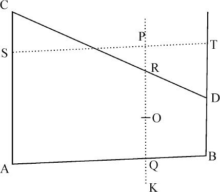
情形1．首先设画向一对对边的直线分别与另两边平行，即PQ和PR与AC边，PS和PT与AB边相平行，而具一对对边，如AC与BD也相互平行。则等分这些平行边的直线是圆锥曲线的一条直径，而且同样等分RQ，令O为RQ的等分点，PO即为该直径上的纵坐标。延长PO到K，使OK等于PO，则OK为该直径在另一侧的纵坐标，因为点A，B，P和K都在圆锥曲线上，而PK以已知角与AB相交，则（由阿波罗尼奥斯的《论圆锥曲线》第三卷，命题17，19，21和23）矩形PQ·QK与矩形AQ·QB的比为给定值，但QK与PR相等，是相等直线OK，OP与OQ，QR的差，所以矩形PQ·QK与PQ·PR相等，所以，矩形PQ·PR与矩形AQ·QB的比，即与矩形PS·PT的比，是给定的。
证毕。
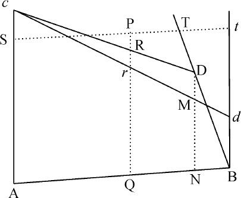
情形2．再设四边形相对边AC与BD不平行，作Bd 平行于AC，与圆锥曲线相交于d ，与直线ST相交于t 。连接Cd 与PQ交于r ，作DM平行PQ与Cd 交于M，与AB交于N，则（因为三角BTt 与DBN相似）Bt 或PQ:Tt ＝DN:NG。同样Rr :AQ或PS＝DM:AN。所以，前项乘以前项，后项乘以后项，则矩形PQ·Rr 比矩形PS·Tt 等于矩形DN·DM比矩形NA·NB；同样（由情形1）运用除法，则矩形PQ·Pr 比矩形PS·Pt 等于矩形PQ·PR比PS·PT。
证毕。
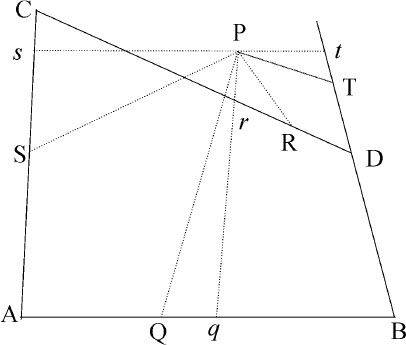
情形3．最后设四条线PQ，PR，PS，PT不平行于边AC，AB，而是任意相交的。作Pq ，Pr 平行于AC，Ps ，Pt 平行于AB。因为三角形PQq ，PRr ，PSs ，PTt 的角是给定的，则PQ比Pq ，PR比Pr ，PS比Ps ，PT比Pt 的值也是给定的，所以，复合比PQ·PR比Pq ·Pr 以及PS·PT比Ps ·Pt 是给定的，但由前面已证明的，Pq ·Pr 比Ps ·Pt 为已知，所以PQ·PR比PS·PT也为已知。
证毕。
引理18
在相同条件下，如果作向四边形二条对边的直线的乘积PQ·PR比作向另两对边的直线的乘积PS·PT的值为已知，则点P位于围成该四边形的圆锥曲线上。
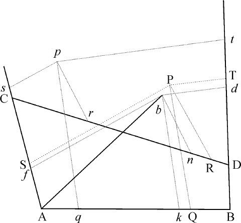
设圆锥曲线通过点A，B，C，D，以及无限多个点P中的一个，例如是P：则点P总是位于该曲线之上。如果否认这一点，连接AP与该圆锥曲线相交于P以外的一点比如b 。所以，如果由点p 和b 以给定角度向四边形的边作直线pq ，pr ，ps ，pt 和bk ，bn ，bf ，bd ，则（由引理17）bk ·bn 比bf ·bd 等于pq ·pr 比ps ·pt ，而且等于（由假定条件）PQ·PR比PS·PT。因为四边形bk Af ，PQAS相似，所以bk 比bf 等于PQ比PS。将此比例式对应项除前一比式，得到bn 比bd 等于PR比PT。所以，等角四边形Dnbd 与DRPT相似，它们的对角线Db ，DP重合，b 落在直线AP与DP的交点上，因而与点P重合。所以，不论如何选取P，它总落在给定的圆锥曲线上。
证毕。
推论．如果由公共点P向三条已知直线AB，CD，AC作同样多的直线PQ，PR，PS，并一一对应，而且相应夹角也是已知的，其中任意两条的乘积PQ·PR与第三条PS的平方的比也是已知的，则引出直线的点P将位于与直线AB，CD相切于A和C的圆锥曲线上。反之亦然，因为三条直线AB，CD，AC的位置不变，令直线BD向AC趋近并与之重合，同样再令直线PT与PS重合，则乘积PT·PS变为PS2 ，原先与曲线相交于点A，B，C，D的直线AB，CD不再与之相交，而只是相切于曲线上相重合的点。
附注
本引理中，圆锥曲线的概念应作广义理解，经过锥体顶点的直线截面与平行于锥体底面的圆周截面都包括在内。因为如果点P处在连接A与D或C与B点的直线上，圆锥曲线就变成两条直线，其中一条就是点P所在的直线，另一条连接着四个点中的另外两个。如果四边形的相对角合起来等于两个直角，四条直线PQ，PR，PS，PT因而以直角或其他相等角引向四条边，而且矩形PQ·PR等于矩形PS·PT，则圆锥曲线变为圆。如果四条直线以任意角度画成，乘积PQ·PR比乘积PS·PT等于后两条直线PS，PT与其对应边夹角S，T的正弦的乘积比前两条直线PQ，PR与其对应边夹角Q，R的正弦的乘积，则圆锥曲线也是圆。在所有其他情形中，点P的轨迹是通常称之为圆锥曲线的三种曲线中的一种。也可以不用四边形ABCD，而代之以一种对边像对角线那样交叉的四边形。四个点A，B，C，D中的一个或两个也可以移到无限远距离处，这意味着四边形的边收敛于该点，成为平行线，在此情形下，圆锥曲线将通过余下的点，并在同一方向上以抛物线形式伸向无限远。
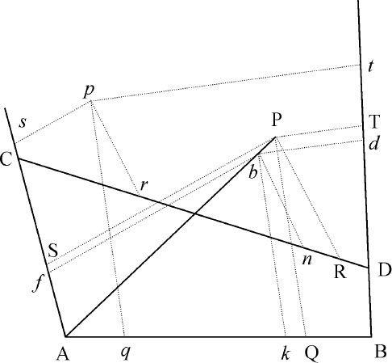
引理19
求出点P，使由它向已知直线AB，CD，AC，BD以已知角度做出的同样多的一一对应直线PQ，PR，PS，PT中的任意两条的乘积PQ·PR与另两条的乘积PS·PT的比值为给定值。
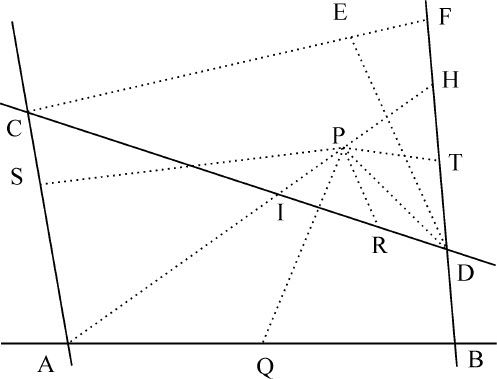
设引向已知直线AB，CD的二条直线PQ，PR包含上述乘积之一，并与另两条已知直线相交于A，B，C，D点，由这些点中的一个，设为A，作任意直线AH，使点P位于其上，令该直线与已知直线BD，CD相交于H和I；而且由于图形的所有角度都是已知的，PQ比PA，以及PA比PS，进而PQ比PS都是已知的。以该比值除给定比值PQ·PR比PS·PT，得到比值PR比PT，再乘以给定比值PI比PR，和PT比PH，即得到PI比PH的值，以及点P。
推论Ⅰ．由此可以在点P的轨迹上任意一点D作切线。在AH通过点D处，点P与D相遇，弦PD变成切线。在此情形中，趋于零的线段IP与PH的比的最后值可由上述推导求出，所以，作CF平行于AD，与BD相交于F，并以该最后比值截取E点，则DE即为所求切线；因为CF与趋于零的线段IH平行，并以相同比例在E和P截开。
推论Ⅱ．也可以求出所有点P的轨迹。通过点A，B，C，D中的一个，设为A作AE与轨迹相切，通过另一点B作平行于该切线的直线BF与轨迹交于F，并由本引理求出点F。在G点等分BF，作直线AG，它就是直径所在位置，BG与FG是其纵坐标，令AG与轨迹相交于H，则AH为直径或横向通径，而通径与它的比等于BG2 比AG·GH。如果AG不与轨迹相交，AH为无限，则轨迹为抛物线；其对应于直线AG的通径为
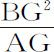
。但它如果与轨迹相交于某处，则轨迹为双曲线，此时点A与H位于点G的同一侧；对于椭圆，则点G位于点A与H之间；如果这时角AGB是直角，同时BG2 等于乘积GA·GH，则这种情形下轨迹为圆。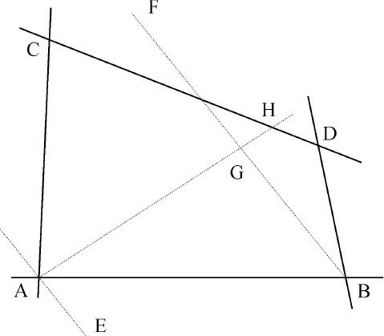
这样，我们在此推论中对始自欧几里得，继之阿波罗尼奥斯所研究的著名四线问题给出解答，在此不用分析计算，而用几何作图，正是古人所要求的。
引理20
如果任意平行四边形ASPQ的相对角的顶点A与P与圆锥曲线相遇，这两个角的一条边AQ，AS的延长线与圆锥曲线在B，C相遇，再由B和C向圆锥曲线上第五个点D作两条直线BD，CD并延长与平行四边形的边PS，PQ相交于T和R；则由平行四边形边上截下的部分PR与PT的比为给定值；反之，如果截下的部分相互间有给定比值，则点D为通过点A，B，C，P的圆锥曲线上的点。
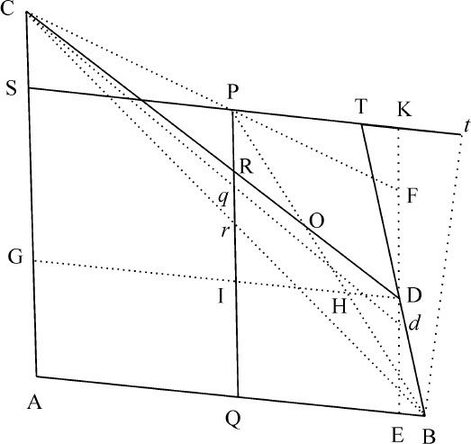
情形1．连接BP，CP，由点D作两条直线DG，DE，使DG平行于AB，并与PB，PQ，CA相交于H，I，G；另一条直线DE平行于AC，与PC，PS，AB相交于F，K，E，则（由引理17）乘积DE·DF与DG·DH的比为给定值。但PQ比DE（或IQ）等于PB比HB，因而等于PT比DH；整理得，PQ比PT等于DE比DH。类似地，PR比DF等于RC比DC，所以等于（IG或）PS比DG，调整得PR比PS等于DF比DG；将两组比式相乘，得到乘积PQ·PR比乘积PS·PT等于乘积DE·DF比乘积DG·DH，为给定值，而PQ与PS为已知，所以PR与PT的比值也就给定。
证毕。
情形2．如果PR与PT相互间比值给定，则由相似理由倒推回去，即得到乘积DE·DF比乘积DG·DH为给定值，因此点D（由引理18）位于通过点A，B，C，P的圆锥曲线上。
证毕。
推论Ⅰ．如果作BC与PQ相交于r ，在PT上取t ，使Pt 比Pr 等于PT比PR；则Bt 将在B点与圆锥曲线相切。因为设点D与点B合并，使得弦BD消失，BT即成为切线，而CD和BT将与CB和Bt 重合。
推论Ⅱ．反之，如果Bt 是切线，直线BD，CD在曲线上任一点D上相遇，则PR比PT等于Pr 比Pt 。而反过来，如果PR比PT等于Pr 比Pt ，则BD与CD相遇于曲线上某点D。
推论Ⅲ．一条圆锥曲线与另一条圆锥曲线的交点不可能超过四个。因为，如果这是可能的，令两条圆锥曲线通过五个点A，B，C，P，O；令直线BD与两曲线相交于D和d ，直线Cd 与直线PQ相交于q 。所以PR比PT等于Pq 比PT：因而PR与Pq 相等，与命题冲突。
引理21
如果两条能动且不确定的直线BM，CM通过给定点B，C并以其为极点，由两直线的交点M引第三条位置已知的直线MN，再作另两条不确定直线BD，CD，与前两条直线在给定点B，C形成给定角MBD，MCD：则直线BD，CD的交点D将画出圆锥曲线并通过点B，C。反之，如果直线BD，CD的交点D画出圆锥曲线并通过点B，C，A，而且角DBM总是等于已知角ABC，而且角DCM总是等于给定角ACB，则点M的轨迹是一条位置已定的直线。
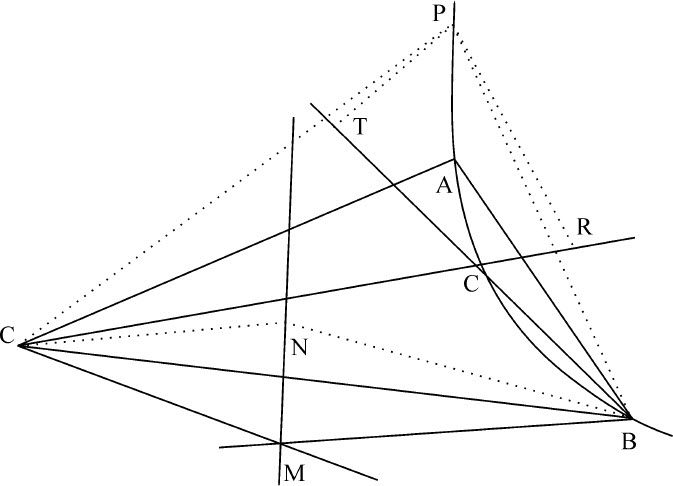
在直线MN上给定一点N，当可动点M落到不动点N上时，令可动点D落到不动点P上。连接CN，BN，CP，BP，由点P作直线PT，PR与BD，CD相交于T和R，并使角BPT等于给定角BNM，角CPR等于给定角CNM。因为（由设定条件）角MBD，NBP相等，角MCD，NCP也相等，移去公共角NBD和NCD，则余下的角NBM与PBT，以及NCM与PCR相等；所以三角形NBM，PBT相似，三角形NCM，PCR也相似。所以，PT比NM等于PB比NB；PR与NM等于PC比NC。而点B，C，N，P是不可移动的，所以PT和PR与NM的比是给定的，因而这两个比之间也有给定比值；所以，（由引理20）点D随可动直线BT和CR连续运动，处于通过点B，C，P的圆锥曲线上。
证毕。
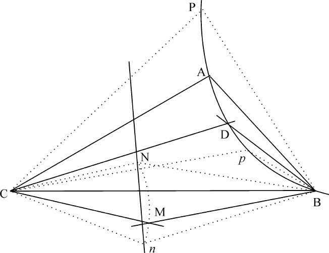
反之，如果可动点处于通过点B，C，A的圆锥曲线上，角DBM总是等于给定角ABC，角DCM总是等于给定角ACB，当点D相继落到圆锥曲线上任意两个不动点p ，P上时，可动点M也相继落入不动点n ，N。通过点n ，N作直线n N：则该直线n N为点M的连续轨迹。因为，如果可能的话，令点M位于任意曲线上，因而点D将处于通过五点B，C，A，p ，P的圆锥曲线上，同时点M持续处于一条曲线上。但由前面所证明的，点D也在通过五个相同点B，C，A，p ，P的圆锥曲线上，同时点M保持在一条直线上，所以两条圆锥曲线通过五个相同点，与命题20推论Ⅲ相悖。所以，点M处于一条曲线上的假设是不合理的。
证毕。
命题22 问题14
作一条圆锥曲线使之通过五个给定点。
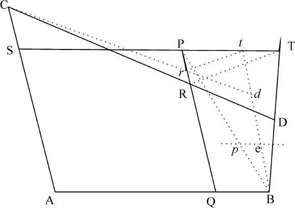
令五个给定点为A，B，C，P，D。由它们中的任意一个，比如A，到另外任意两点如B，C，它们可称之为极点，作直线AB，AC，再通过第四个点P作直线TPS，PRQ平行于上述两直线。再由两个极点B，C，作通过第五个点D的两条不确直线BDT，CRD，与上述两条直线TPS，PRQ（前者与前者，后者与后者）相交于T，R。再作直线tr 平行于TR，在直线PT，PR上截取正比于PT，PR的部分Pt ，Pr ；如果通过其端点t ，r ，以及极点B，C作直线Bt ，Cr ，并相交于d ，则点d 即在所求圆锥曲线上，因为（由引理20）该点d 处于通过四点A，B，C，P的圆锥曲线上；当线段Rr ，Tt 趋于零时，点d 与点D重合，所以圆锥曲线通过五个点A，B，C，P，D。
证毕。
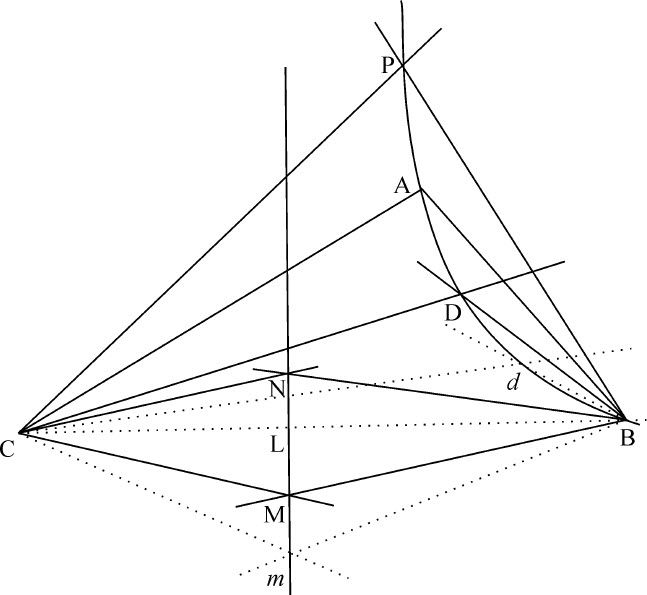
另一种解法
将已知点中三个例如A，B，C连接，并以其中两个点B，C为极点，使具有给定大小的角ABC，ACB旋转，先令边BA，CA移至点D，然后移至点P，在这两种情形中，另两个边BL，CL分别相交于点M，N。作不定直线MN，令两个可转动角绕极点B，C转动，由此边BL，CL或BM，CM产生的相交点设为m ，它将永远处于不定直线MN上；而边BA，CA，或BD，CD的交点，现设为d ，将画出所需的圆锥曲线PADd B，因为（由引理21）点d 在通过点B，C的圆锥曲线上，当点m 与点L，M，N重合时，点d （见图）将与点A，D，P重合。所以，由此将画出通过五个点A，B，C，P，D的圆锥曲线。
推论Ⅰ．由此容易画出一直线使之在给定点B与圆锥曲线相切，令点d 与点B重合，则Bd 即成为所要求的切线。
推论Ⅱ．由此可以像在引理19推论中那样求出圆锥曲线的中心、直径和通径。
附注
上述作图中的前一种可以加以简化，连接B，P，并在该直线上，如果必要的话，在其延长线上，取Bp 比BP等于PR比PT；通过点p 作不定直线pe 平行于SPT，并使pe 永远等于Pr ；作直线Be ，Cr 相交于d 。因为Pr 比Pt ，PR比PT，p B比PB，pe 比Pt 都是相同比值，pe 与Pr 永远相等。沿用此方法圆锥曲线上的点最容易找出，除非采用第二种作图法机械地描绘曲线。
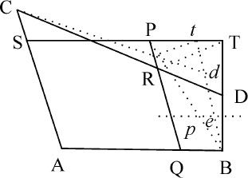
命题23 问题15
作圆锥曲线通过四个给定点，并与给定直线相切。
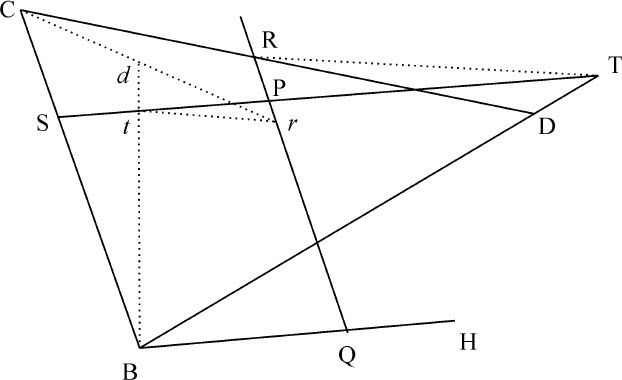
情形1．设HB为已知切线，B为切点，C，D，P为另三个已知点。连接BC，作PS平行于BH，PQ平行于BC；画出平行四边形BSPQ，作BD与SP相交于T，CD与PQ相交于R。最后，作任意直线tr 平行于TR，分别从PQ，PS分割出Pr ，Pt 正比于PR，PT，作Cr ，Bt ，它们的交点d （由引理20）总是落在所要画的圆锥曲线上。
另一种解法
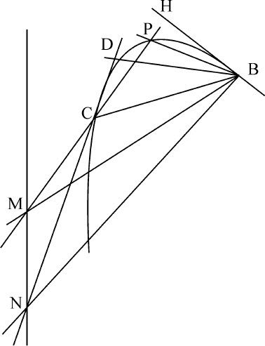
令大小给定的角CBH绕极点B旋转，并使直线半径DC绕极点C旋转并向两边延长，角的一边BC与半径相交于点M，N，同时另一边与相同半径交于点P和D，再作不定直线MN，使半径CP或CD与角的BC边在该直线上保持相交，则角的另一边BH与半径的交点将描出所需的曲线。
因为，如果在前述问题的作图中，点A与点B重合，直线CA与CB也将重合，则直线AB的最后位置就是切线BH；所以，前述作图即与本问题作图相同。所以，BH边与半径的交点所画出的圆锥曲线将通过点C，D，P，并在B点与直线BH相切。
完毕。
情形2．设已知四点B，C，D，P均不在切线HI上。由相交于G的直线BD，CP各连接两个已知点，并与切线相交于H和I，在A分割切线，使得HA比IA等于CG和GP的比例中项与BH和HD的比例中项的乘积，再比GD和GB的比例中项与PI和IC的比例中项的乘积，则A就是切点。因为，如果平行于直线PI的HX与曲线相交于任意点X和Y，则点A（由圆锥曲线特性）将使得HA2 比AI2 的值等于乘积HX·HY比乘积BH·HD，或乘积CG·GP比乘积DG·GB；再乘以乘积BH·HD比乘积PI·IC。而在切点A找到之后，曲线即可以由第一种情形做出。
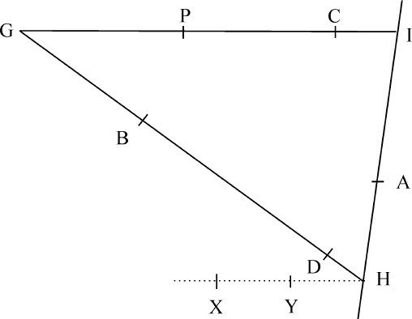
不过点A既可以在点H与I之间，也可以在其外，由此可画出两种曲线。
命题24 问题16
画一条圆锥曲线，使它通过三个已知点，并与两条已知直线相切。
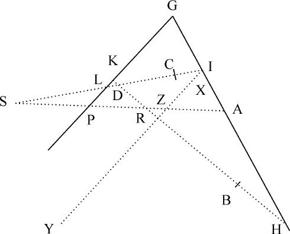
设HI，KL为已知切线，B，C，D为已知点。通过已知点中的任意两个，设为B，D，作不确定直线BD与两条切线相交于点H，K，再用类似方法通过另外两点C，D作直线CD与两切线相交于I，L，将所画的直线相交于R，S，使得HR比KR等于BH和HD的比例中项比BK和KD的比例中项，IS比LS等于CI和ID的比例中项比CL和LD的比例中项，不过，交点在K和H，以及I和L之间或之外可以随意选定。然后作RS与两切线相交于A和P，则A与P就是切点。因为，如果在切线上任何其他位置上的A与P是切点，通过点H，I，K，L中的任意一个，设为任一条切线HI上的I，作直线IY平行于另一条切线KL，并与曲线相交于X和Y，在该直线上使IZ等于IX和IY的比例中项，则乘积XI·IY或IZ2 （由圆锥曲线性质）比LP2 将等于乘积CI·ID比乘积CL·LD；即（如图）等于SI比SL2 。所以，IZ:LP＝SI:SL。所以，点S，P，Z在同一条直线上。而且，由于两切线相交于G，则乘积XI·IY或IZ2 （由圆锥曲线性质）比IA2 等于GP2 比GA2 ，所以IZ:IA＝GP:GA。因而点Z，P，A在一条直线上，所以，点S，P，A也在一条直线上，由相同理由可以证明R，P，A也在一条直线上。因而切点A与P在直线RS上，而在找到这些点后，曲线即可以画出，与前述问题第一种情形相同。
完毕。
在本命题，以及前一命题情形2中，作图法相同，无论直线XY是否与曲线相交于X，Y。相交与否与作图无关。但已证明的作图是采用该直线与曲线相交的假设的，不相交的作图也就证明了。所以，出于简捷的考虑，我省略了详细的证明。
引理22
将图形变换为同种类的另一个图形。
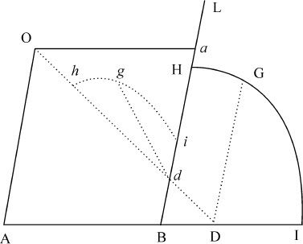
设任意图形HGI需要加以变换。随意作两条平行线AO，BL与任意给定的第三条直线AB相交于A和B，并由图形中任意点G作任意直线GD平行于OA，并延长直线AB，然后由任意直线OA上的给定点O向点D作直线OD，与BL相交于d ；由该交点作直线dg 与直线BL成任意给定夹角，并使dg 比Od 等于DG比OD；则g 是新图形hgi 中对应于G的点。由类似方法可使第一个图形中若干点给出在图形中同样多的对应点，所以，如果设想点G以连续运动通过第一个图形中的所有点，则点g 将相似地以连续运动通过新图形中所有的点，画出相同的图形，为了加以区别，我们称DG为原纵坐标，dg 为新纵坐标，AD为原横坐标，ad 为新横坐标，O为极点，OD为分割半径，OA为原纵半径，Oa （由它使平行四边形OABa 得以完成）为新纵半径。
如果点G在给定直线上，则点g
也将在一给定直线上，如果点G在一圆锥直线上，则点g
也在一圆锥直线上，在此，我把圆也当做圆锥曲线中的一种。而且，如果点G在一条三次曲线上，点g
也将在三次曲线上，对于更高次的曲线也是如此，点G与g
所在的曲线其次数总是相同，因为ad
:OA＝Od
:OD＝dg
:DG＝AB:AD；所以，AD等于 ，而DG等于
，而DG等于 。现在，如果点G在直线上，则在任何表示横坐标AD与纵坐标GD的关系的方程中，未确定的曲线AD和DG不会高于一次；在此方程中以
。现在，如果点G在直线上，则在任何表示横坐标AD与纵坐标GD的关系的方程中，未确定的曲线AD和DG不会高于一次；在此方程中以
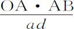
代替AD，以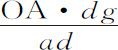
代替DG，则得到的表示新横坐标ad 和新纵坐标dg 关系的方程也只是一次的，所以它只表示一条直线；但如果AD与DG（或它们中的一个）在原方程中升为二次方，则ad 与dg 在第二个方程中也类似地升到二次方。对于三次或更高次方也是如此。ad 与dg 在第二个方程中，以及AD与DG在原方程中所要确定的曲线其次数总是相同的，因而点G，g 所在曲线的解析次数总是相同。而且，如果任意直线与一个图形中的曲线相切，则同一直线以与曲线相同的方式移至新图形中也与新图形中的曲线相切；反之亦然。因为，如果原图形曲线上的任意两点相互趋近并重合，则相同的点变换到新图形中也将相互趋近并重合，所以，两个图形中哪些点构成的直线将变成曲线的切线。我本应用更几何的形式对此加以证明，但在此从简了。
所以，如果要将一个直线图形变换成另一个，只需要将原图形中包含的直线的交点加以变换，在新图形中通过已变换的交点作直线。但如果要变换曲线图形，则必须运用确定该曲线的方法，变换若干点、切线和其他直线。本引理可用于解决更困难的问题；因为由此我们可以把复杂的图形变换为较简单的。这样，把原纵坐标半径以通过收敛直线的交点的直线来代替，可以将收敛到一点的任意直线变换为平行线，因为这样使它们的交点落在无限远处；而平行线正是趋向于无限远处的一点的。在新图形的问题解决之后，如果运用相反的操作把新图形变换为原图形，就会得到所需要的解。
本引理还可用于解决立体问题。因为通常需要解决两条圆锥曲线相交的问题，它们中的任何一条，如果是双曲线或抛物线的话，都变换成椭圆，而该椭圆又很容易变换为圆。在平面构图问题中也是如此，直线与圆锥曲线可以变换为直线与圆。
命题25 问题17
作一圆锥曲线，使它通过两个已知点，并与三条已知直线相切。
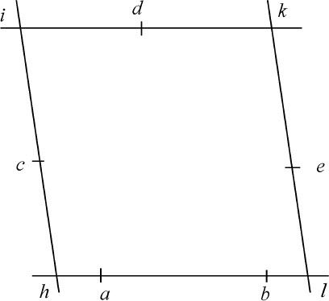
通过任意两条切线的交点，以及第三条切线与通过两个已知点的直线的交点，作一条不确定直线，将此直线作为原纵坐标半径，运用前述引理把图形变换为新图形。在此图形中原先的两条切线变为相互平行，而第三条切线与通过两已知点的直线相互平行。设hi ，kl 为那两条平行的切线，ik 为第三条切线，hl 为与之相平行的通过两点a ，b 的直线，在新图形中圆锥曲线应通过两点，作平行四边形hikl ，令直线hi ，ik ，kl 相交于c ，d ，e ，并使hc 比乘积ahb 的平方根，ic 比id ，以及ke 比kd ，等于直线hi 与ki 的和，比三条直线的和，第一条是直线ik ，另两条是乘积ahb 与alb 的平方根；则c ，d ，e 为切点。因为，由圆锥曲线的性质，
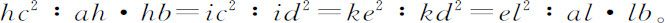
所以，
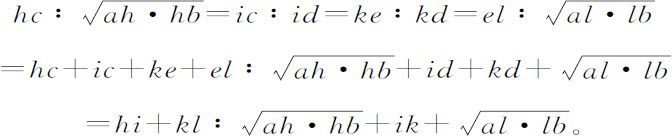
所以，由该给定比值可得到新图形中的切点c ，d ，e 。运用前一引理的相反操作，将这些点变换到原图形中，由问题14即可画出所需圆锥曲线。
完毕。
不过，根据点a ，b 落在点h ，l 之间，或是在它们之外，点c ，d ，e 相应地也落在点h ，i ，k ，l 之间或之外。如果a ，b 中的一个落在点h ，l 之间，而另一个在点h ，l 之外，则问题不可能求解。
命题26 问题18
作一圆锥曲线，使它通过一个已知点，并与四条已知直线相切。
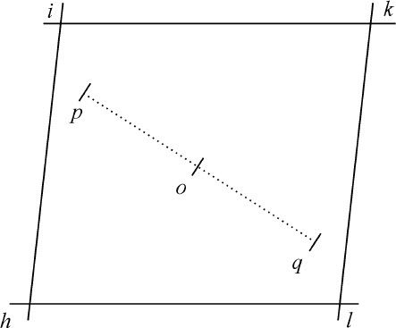
由任意两条切线的交点到另两条切线的交点作一条不确定直线；并以此直线为原纵坐标半径，把图形（由引理22）变换为新图形，则两对在原纵坐标半径中相交的切线现在变为相互平行，令hi 和kl ，ik 和hl 为这两对平行线，作平行四边形hikl 。令P为新图形中对应于原图形中已知点的点。通过图形中心O作pq :使Oq 等于Op ，q 为在新图形中圆锥曲线必定要通过的另一个点。运用引理22的相反操作，将此点变换到原图形中，我们就得到圆锥曲线要通过的两个点。而由命题17，通过这两个点可以做出所要画的圆锥曲线。
引理23
如果两条已知直线AC，BD以已知点A，B为端点，相互间有给定比值，而连接不定点C，D的直线在K处以一给定比值分割，则点K在一给定直线上。
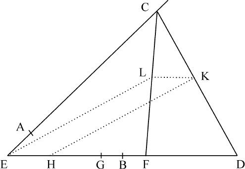
令直线AC，BD相交于E，在BE上取BG比AE等于BD比AC，令FD总是等于给定直线EG；则在图上，EC比GD，即比EF，等于AC比BD，所以是给定比值，所以三角形EFC形状已知。令CF在L处分割使CL比CF等于CK比CD，由于这是个已知比值，所以三角形EFL形状也为已知，因而点L在已知直线EL上，连接LK，三角形CLK，CFD相似，因为FD是已知直线，LK比FD为已知，所以LK就给定了，令EH等于LK，则ELKH总是平行四边形，所以点K总是在该平行四边形的已知边HK上。
证毕。
推论：因为图形EFLC形状已定，三条直线EF，EL和EC，也就是GD，HK和EC相互间有给定比值。
引理24
如果三条直线与一任意圆锥曲线相切，其两条直线相互平行且位置已知，则该圆锥曲线上与平行直线相平行的半径是由二平行线切点到它们被第三条切线截取的线段的比例中项。
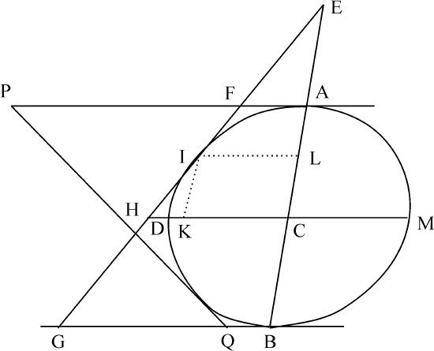
令AF，GB为两条平行直线，与圆锥曲线ADB相切于A和B，EF为第三条直线与圆锥曲线相切于I，并与前两条切线相交于F和G，令CD为图形上平行于前两条切线的半径：则AF，CD，BG呈连续比例关系，因为，如果共轭直径AB，DM与切线FG相交于E和H，二直径相交于C，作平行四边形IKCL；由圆锥曲线性质，
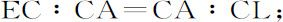
所以，
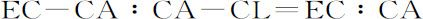
或者
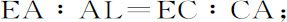
所以，
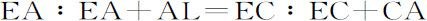
或者
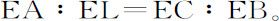
所以，因为三角形EAF，ELI，ECH，EBG相似，
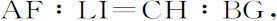
类似地，由圆锥曲线性质，
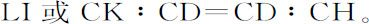
在最后二比例式中对应项相乘并化简，
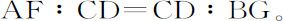
证毕。
推论Ⅰ．如果两切线FG，PQ相交于O，且与两平行切线AF，BG相交于F和G，以及P和Q，则把本引理应用到EG和PQ上，
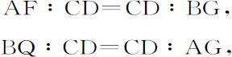
所以，
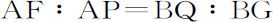
而且
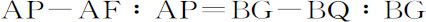
或者
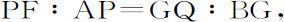
以及
推论Ⅱ．而且，通过点P和G以及F和Q的直线PG，FQ将与通过图形中心以及切点A，B的直线ACB相交。
引理25
如果一平行四边形的四个边与任意一条圆锥曲线相切，并且其延长线与第五条切线相交，则对于平行四边形对角上的两个相邻的边上被截取的两段，其一段与截开它的边的比等于相邻的边上切点到第三条边之间的部分比另一段。
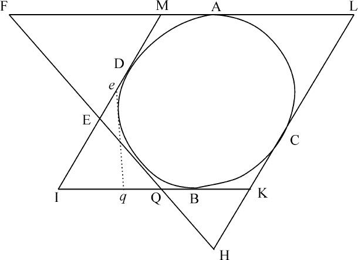
令平行四边形MLIK的四条边ML，IK，KL，MI与圆锥曲线相交于A，B，C，D，令第五条切线FQ与这些边相交于F，Q，H和E，取两边MI，KI上的二段ME，KQ，或边KL，ML上的二段KH，MF，则
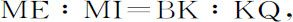
以及

因为，由前述引理推论Ⅰ，
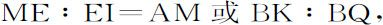
用加法，
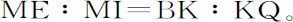
证毕。
而且，KH:HL＝BK或AM:AF，
用减法，
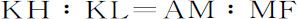
证毕。
推论Ⅰ．如果包含给定圆锥曲线的平行四边形为已知，则乘积KQ·ME以及与之相等的乘积KH·MF也就给定了。因为三角形KQH，MFE相似，因而这些乘积相等。
推论Ⅱ．如果作第六条切线ep 与切线KI，MI相交于q 和e ，则乘积KQ·ME等于乘积Kq ·Me ，而且
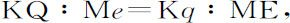
再由减法，
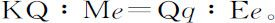
推论Ⅲ．如果作Eq ，e Q并进行二等分，再通过两个等分点作直线，则该直线将通过圆锥曲线中心，因为Qq :Ee ＝KQ:Me ，同一直线将通过所有直线Eq ，e Q，MK的中点（由引理23），而直线MK的中点就是曲线的中心。
命题27 问题19
作一条圆锥曲线与五条已知直线相切。
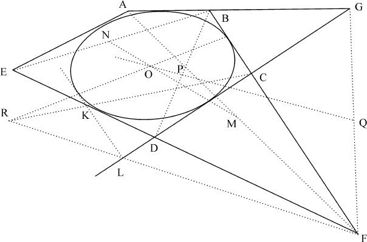
设ABG，BCF，GCD，FDE，EA为位置已定的切线。在M，N平分由其任意四条切线组成的四边形ABFE的对角线AF，BE；（由引理25推论Ⅲ）通过等分点所作的直线MN将通过圆锥曲线中心，再在P和Q等分由另外任意四条切线组成的四边形BGDF的对角线（如果可以这样称它们的话）BD，GF，则通过等分点的直线PQ也将通过圆锥曲线中心；所以该中心在二条等分点连线的交点上，设为O，平行于任一切线BC作KL，使中心O正好位于两切线的中间，则KL将与要画的圆锥曲线相切，令该切线与另外两个任意切线GCD，FDE相交于L和K，不平行的切线CL，FK与平行切线CF，KL相交于点C和K，F和L，作直线CK，FL相交于R，再作直线OR并延长，与平行切线CF，KL在切点相交，这可以由引理24推论Ⅱ证明。用相同的方法可以找到其他切点，再由问题14做出圆锥曲线。
完毕。
附注
以上诸命题中也包含已知圆锥曲线的中心或渐近线的问题。因为当已知点、切线和中心时，也就知道了在中心另一侧相同距离处同样多的点和切线，渐近线可以看做是切线，其在无限远处的极点（如果可以这样称它的话）就是一个切点。设想一条切线的切点向无限远处移动，则切线最终变为渐近线，而上述问题中的作图就成了已知渐近线问题的作图了。
做出圆锥曲线后，可以这样找出它们的轴和焦点。在引理21的构图中，令其交点画出圆锥曲线的动角PBN，PCN的边BP，CP相互平行，并在图形中保持这样的位置使它们绕其极点B，C转动，同时过这二个角的另外二个边CN，BN的交点K或R画出圆BKGC。令O为该圆的中心。由该中心向在画圆锥曲线时使边CN，BN，保持交会的平行线MN作垂线OH并与圆相交于K和L。当另两个边CK，BK在与平行线MN距离最近的点K相交时，先前的两个边CP，BP将平行于长轴，垂直于短轴；如果这些边相交于最远点L，则发生相反情况。所以，当圆锥曲线的中心给定时，其轴也就给定，而它们已知时，其焦点也就易于求得了。
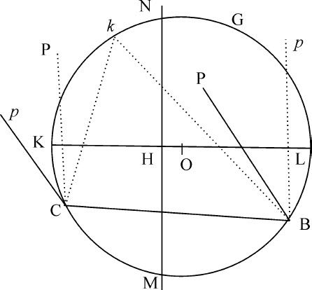
两个轴的平方的比等于KH比LH，因而容易通过四个给定点作已知类型的圆锥曲线，因为如果给定点中的两个是极点B，C，第三个将给出动角PCK和PBK；而已知这些，可做出圆BGKC。然后，因为圆锥曲线类型已定，OH比OK的值，因而OH本身也就给定。关于O以间隔OH为半径作另一个圆，而通过边CK，BK的交点与该圆相切的直线，在先前的边CP，BP相交于第四个已知点时，即变成平行线MN，由它即可画出圆锥曲线。此外，还可以作一个已知圆锥曲线的内接四边形（少数不可能的情形除外）。
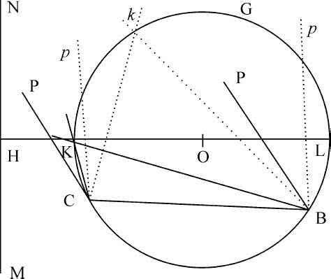
还有些引理，通过已知点，相切于已知直线，可做出已知类型的圆锥曲线，其类型是，如果通过一已知点的直线位置已定，它将与给定圆锥曲线相交于两点，将这两点间距离二等分，则等分点将与另一个类型相同的圆锥曲线相切，且其轴平行于前一图形的轴。不过，我急于讨论更有用的事情。
引理26
三角形的类型和大小均给定，将其三个角分别对应于同样多的相互不平行的已知直线，使每个角与一条直线相接触。
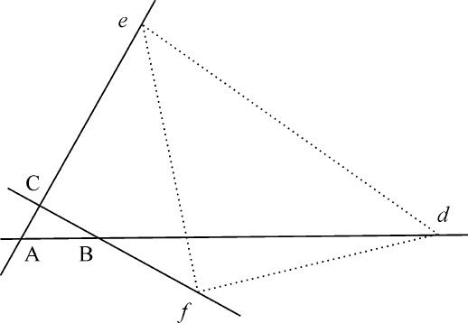
三条不定直线AB，AC，BC位置已定，现在要求这样安置三角形DEF，使角D与直线AB相接触，角E与直线AC相接触，而角F与直线BC相接触，在DE，DF和EF上作三段圆弧DRE，DGF，EMF，其张角分别等于BAC，ABC，ACB。而这些圆弧这样面对直线DE，DF，EF，使字母DRED的转动顺序与字母BACB相同，字母DGFD的顺序与ABCA相同，而字母EMFE的顺序与字母ACBA相同；然后将这些圆弧拼成整圆，令前两个圆相交于G，并设它们的中心为P和Q，连接GP，PQ，使
以G为中心，间隔Ga 为半径，画一个圆与第一个圆DGE相交于a ，连接a D与第二个圆DFG相交于b ，再作a E与第三个圆EMF相交于c ，作图形ABCdef 与图形abc DEF相似而且相等，则问题得解。
因为，作FC与a D相交于n ，连接a G，b G，QG，QD，PD，并画出角Ea D等于角CAB，角ac F等于角ACB；所以三角形anc 与三角形ABC等角，因而角anc 或Fn C等于角ABC，进而等于角Fb D；所以点n 落在点b 上。而且，圆心角GPD的半角GPQ等于圆周角Ga D，而圆心角GQD的半角GQP等于圆周角Gb D的补角，因而等于角Gba 。由此，三角形GPQ与Gab 相似，而且
由图中可知，
因而ab 与AB相等；至此我们证明了三角形abc ，ABC不仅相似，而且相等，所以，由于三角形DEF的角D，E，F分别与三角abc 的边ab ，ac ，bc 相切，做出图形ABCdef 相似且相等于图形abc DEF，则问题得解。
证毕。
推论．因此，可以做出一条直线，其给定长度的部分介于三条位置已定的直线之间。设有三角形DEF，其点D向边EF趋近，随着边DE，DF变成一条直线，三角形本身也变成一条直线，其给定部分DE介于位置已定的直线AB，AC之间，而其给定部分DF介于位置已定的直线AB，BC之间；然后把上述作图法用于本情形，问题得解。
命题28 问题20
作一类型和大小均已知的圆锥曲线，使其给定部分介于位置已定的三条直线之间。
设一条圆锥曲线可以画成相似且相等于曲线DEF，并可以被三条位置已定的直线AB，AC，BC分割为与该曲线的给定部分相似且相等的部分DE和EF。
作直线DE，EF，DF；将三角形DEF的角D，E，F与位置已定的直线相接触（由引理26）。再关于三角形画出圆锥曲线，使其与曲线DEF相似而且相等。
完毕。
引理27
作一类型已定的四边形，使其角分别与四条既不相互平行，又不向一公共点收敛的直线相接触。
令四条直线ABC，AD，BD，CE位置已定；第一条直线与第二条相交于A，与第三条相交于B，与第四条相交于C；设所要画的四边形fghi 与四边形FGHI相似，其角f 等于给定角F，与直线ABC相接触；其他的角g ，h ，i 等于其他给定角G，H，I，分别与其他直线AD，BD，CE相接触。连接FH，并在FG，FH，FI上作同样多的圆弧FSG，FTH，FVI，其中第一个FSG张角等于角BAD，第二个FTH张角等于角CBD，第三个FVI张角等于角ACE。而这些圆弧这样面对直线FG，FH，FI，使字母FSGF的圆顺序与字母BADB相同，字母FTHF的旋转顺序与字母CBDC相同，而字母FVIF的顺序与字母ACEA相同。把这些圆弧拼成整圆，令P为第一个圆FSG的中心，Q为第二个圆FTH的中心，连接PQ并向两边延长，取QR使得QR:PQ＝BC:AB。而QR指向点Q的一侧，使得字母P，Q，R的顺序与字母A，B，C的相同；再以R为中心，RF为半径作第四个圆FNc 与第三个圆FVI相交于c 。连接Fc 与第一个圆交于a ，与第二个圆交于b 。作a G，b H，c I，令图形ABCfghi 相似于图形abc FGHI；则四边形fghi 即是所要画的图形。
因为，令前两个圆相交于K，连接PK，QK，RK，a K，b K，c K，并把QP延长到L。圆周角Fa K，Fb K，Fc K是圆心角Fp K，FQK，FRK的一半，所以等于这些角的半角LPK，LQK，LRK。所以图形PQRK与图形abck 等角且相似，因而ab 比bc 等于PQ比QR，即等于AB:BC。而由作图知，角f Ag ，f Bh ，f Ci 等于角Fa G，Fb H，Fc I，所以，画出的图形ABCfghi 将相似于图形abc FGHI，此后，画出的四边形fghi 将相似于四边形FGHI，而且其角f ，g ，h ，i 与直线ABC，AD，BD，CE相接触。
证毕。
推论．可以作一条直线，其各部分以给定顺序介于四条给定直线之间，而且相互间呈已知比。令角FGH，GHI增大，使得直线FG，GH，HI成为同一条直线；根据本情形中问题的作图，可画出直线fghi ，其各部分fg ，gh ，hi 介于四条位置已定的直线之间，AB与AD，AD与BD，BD与CE，而且其相互间的比与直线FG，GH，HI间同样顺序的比相等。不过，这件事可以用更容易的方法来做：
把AB延长到K，BD延长到L，使BK比AB等于HI比GH；DL与BD等于GI比FG；连接KL与直线CE相交于i 。把i L延长到M，使LM比i L等于GH比HI，再作MQ平行于LB，与直线AD相交于g ，连接gi 与AB，BD相交于f ，h 则问题得解。
因为，令Mg 与直线AB相交于Q，AD与KL相交于S，作直线AP平行于BD并与i L相交于P，则g M比Lh （gi 比hi ，Mi 比Li ，GI比HI，AK比BK）与AP比BL比值相同，在R分割DL，使DL比RL取同一比值；因为g S比g M，AS比AP，以及DS比DL相等，所以，等于g S比Lh ，AS比BL，DS比RL；相互混合，BL－RL比Lh －BL，等于AS－DS比g S－AS。即，BR比Bh 等于AD比Ag ，所以等于BD比g Q。或者，BR比BD等于Bh 比g Q，或等于fh 比fg 。而由作图知，直线BL在D和R被分割的比值与直线FI在G和H被分割相同，所以BR比BD等于FH比FG。所以，fh 比fg 等于FH比FG。所以，类似地有gi 比hi 等于Mi 比Li ，即等于GI比HI，这意味着直线FI，fi 在G和H，g 和h 被相似地分割。
证毕。
在本推论作图中，继作直线LK与CE相交于i 之后，可以把i E延长到V，使EV比Ei 等于FH比HI，然后作Vf 平行于BD。如果以i 为中心，IH为间隔作一圆交BD于X，再延长i X到Y使i Y等于IF，再作Yf 平行于BD，也得到相同结果。
克里斯托弗·雷恩爵士和瓦里斯博士很久以前曾给出这一问题的其他解法。
命题29 问题21
作一类型已定的圆锥曲线，使它被四条位置已定的直线分割成顺序、类型和比例均给定的部分。
设所要画的圆锥曲线相似于曲线FGHI，其各部分相似于且正比于后者的部分FG，GH，HI，介于位置已定的直线AB和AD，AD和BD，BD和CE之间，即，第一部分介于前两条直线之间，第二部分介于第二对直线之间，第三部分介于第三对直线之间。作直线FG，GH，HI，FI；（根据引理27）作四边形fghi 相似于四边形FGHI，其角f ，g ，h ，i 分别依次与位置已定的直线AB，AD，BD，CE相接触，然后关于此四边形作圆锥曲线，则该圆锥曲线将相似于曲线FGHI。
附注
这个问题可用下述方法解出，连接FG，GH，HI，FI，延长GF到V，连接FH，IG，使角CAK，DAL等于角FGH，VFH，令AK，AL与直线BD相交于K和L，再作KM，LN，其中KM使得角AKM等于角GHI，且KM比AK等于HI比GH。令LN使角ALN等于角FHI，且LN比AL等于HI比FH。而AK，KM，AL，LN是这样指向直线AD，AK，AL的一侧，使得字母CAKMC，ALKA，DALND的轮换顺序与字母FGHIF相同；作MN与直线CE相交于i ，使角i ED等于角IGF，令PE比Ei 等于FG比GI；通过P作PQf 使它与直线ADE的夹角PQE等于角FIG，并与直线AB相交于f ，连接fi 。而PE和PQ是这样指向直线CE，PE的一侧，使得字母PEi P和PEQP的轮换顺序与字母FGHIF相同；如果在直线fi 上以相同字母顺序作四边形fghi 相似于四边形FGHI，再关于它作一类型已知的外切圆锥曲线，则问题得解。
迄此为止讨论的都是轨道的求法。下面要求出物体在这些轨道上的运动。